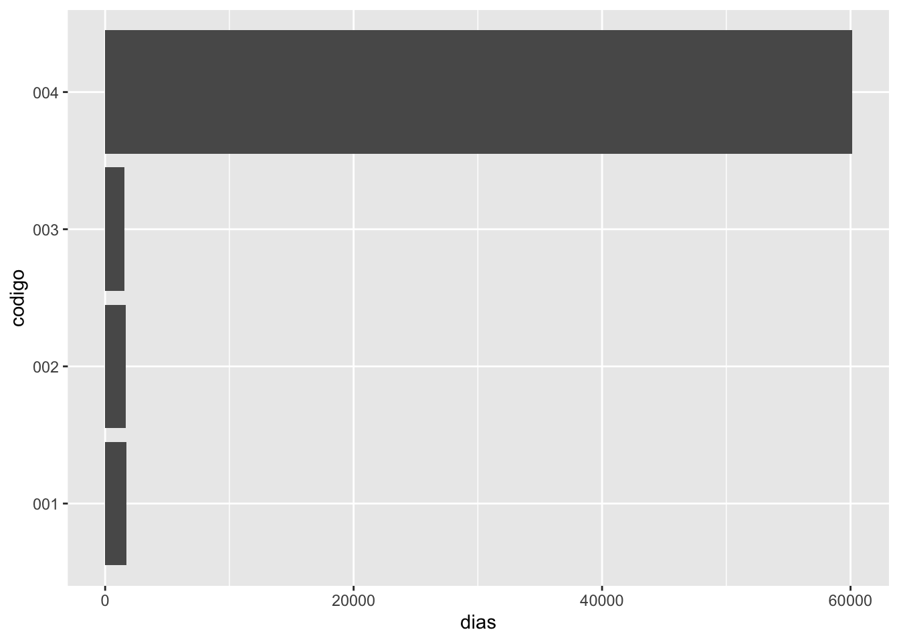

Chapter 18 Datos Relacionados
Fecha de la ultima revisión
## [1] "2024-09-24"El tema proviene de los siguientes sitios.
English: https://r4ds.had.co.nz/relational-data.html
Español: https://es.r4ds.hadley.nz/13-relational-data.html
## # A tibble: 336,776 × 19
## anio mes dia horario_salida salida_programada atraso_salida
## <int> <int> <int> <int> <int> <dbl>
## 1 2013 1 1 517 515 2
## 2 2013 1 1 533 529 4
## 3 2013 1 1 542 540 2
## 4 2013 1 1 544 545 -1
## 5 2013 1 1 554 600 -6
## 6 2013 1 1 554 558 -4
## 7 2013 1 1 555 600 -5
## 8 2013 1 1 557 600 -3
## 9 2013 1 1 557 600 -3
## 10 2013 1 1 558 600 -2
## # ℹ 336,766 more rows
## # ℹ 13 more variables: horario_llegada <int>, llegada_programada <int>,
## # atraso_llegada <dbl>, aerolinea <chr>, vuelo <int>, codigo_cola <chr>,
## # origen <chr>, destino <chr>, tiempo_vuelo <dbl>, distancia <dbl>,
## # hora <dbl>, minuto <dbl>, fecha_hora <dttm>## [1] "anio" "mes" "dia"
## [4] "horario_salida" "salida_programada" "atraso_salida"
## [7] "horario_llegada" "llegada_programada" "atraso_llegada"
## [10] "aerolinea" "vuelo" "codigo_cola"
## [13] "origen" "destino" "tiempo_vuelo"
## [16] "distancia" "hora" "minuto"
## [19] "fecha_hora"## # A tibble: 16 × 2
## aerolinea nombre
## <chr> <chr>
## 1 9E Endeavor Air Inc.
## 2 AA American Airlines Inc.
## 3 AS Alaska Airlines Inc.
## 4 B6 JetBlue Airways
## 5 DL Delta Air Lines Inc.
## 6 EV ExpressJet Airlines Inc.
## 7 F9 Frontier Airlines Inc.
## 8 FL AirTran Airways Corporation
## 9 HA Hawaiian Airlines Inc.
## 10 MQ Envoy Air
## 11 OO SkyWest Airlines Inc.
## 12 UA United Air Lines Inc.
## 13 US US Airways Inc.
## 14 VX Virgin America
## 15 WN Southwest Airlines Co.
## 16 YV Mesa Airlines Inc.## [1] "aerolinea" "nombre"## # A tibble: 1,458 × 8
## codigo_aeropuerto nombre latitud longitud altura zona_horaria horario_verano
## <chr> <chr> <dbl> <dbl> <dbl> <dbl> <chr>
## 1 04G Lansdo… 41.1 -80.6 1044 -5 A
## 2 06A Moton … 32.5 -85.7 264 -6 A
## 3 06C Schaum… 42.0 -88.1 801 -6 A
## 4 06N Randal… 41.4 -74.4 523 -5 A
## 5 09J Jekyll… 31.1 -81.4 11 -5 A
## 6 0A9 Elizab… 36.4 -82.2 1593 -5 A
## 7 0G6 Willia… 41.5 -84.5 730 -5 A
## 8 0G7 Finger… 42.9 -76.8 492 -5 A
## 9 0P2 Shoest… 39.8 -76.6 1000 -5 U
## 10 0S9 Jeffer… 48.1 -123. 108 -8 A
## # ℹ 1,448 more rows
## # ℹ 1 more variable: zona_horaria_iana <chr>## [1] "codigo_aeropuerto" "nombre" "latitud"
## [4] "longitud" "altura" "zona_horaria"
## [7] "horario_verano" "zona_horaria_iana"## # A tibble: 3,322 × 9
## codigo_cola anio tipo fabricante modelo motores asientos velocidad
## <chr> <int> <chr> <chr> <chr> <int> <int> <int>
## 1 N10156 2004 Ala fija mult… EMBRAER EMB-1… 2 55 NA
## 2 N102UW 1998 Ala fija mult… AIRBUS IN… A320-… 2 182 NA
## 3 N103US 1999 Ala fija mult… AIRBUS IN… A320-… 2 182 NA
## 4 N104UW 1999 Ala fija mult… AIRBUS IN… A320-… 2 182 NA
## 5 N10575 2002 Ala fija mult… EMBRAER EMB-1… 2 55 NA
## 6 N105UW 1999 Ala fija mult… AIRBUS IN… A320-… 2 182 NA
## 7 N107US 1999 Ala fija mult… AIRBUS IN… A320-… 2 182 NA
## 8 N108UW 1999 Ala fija mult… AIRBUS IN… A320-… 2 182 NA
## 9 N109UW 1999 Ala fija mult… AIRBUS IN… A320-… 2 182 NA
## 10 N110UW 1999 Ala fija mult… AIRBUS IN… A320-… 2 182 NA
## # ℹ 3,312 more rows
## # ℹ 1 more variable: tipo_motor <chr>## # A tibble: 26,115 × 15
## origen anio mes dia hora temperatura punto_rocio humedad
## <chr> <int> <int> <int> <int> <dbl> <dbl> <dbl>
## 1 EWR 2013 1 1 1 39.0 26.1 59.4
## 2 EWR 2013 1 1 2 39.0 27.0 61.6
## 3 EWR 2013 1 1 3 39.0 28.0 64.4
## 4 EWR 2013 1 1 4 39.9 28.0 62.2
## 5 EWR 2013 1 1 5 39.0 28.0 64.4
## 6 EWR 2013 1 1 6 37.9 28.0 67.2
## 7 EWR 2013 1 1 7 39.0 28.0 64.4
## 8 EWR 2013 1 1 8 39.9 28.0 62.2
## 9 EWR 2013 1 1 9 39.9 28.0 62.2
## 10 EWR 2013 1 1 10 41 28.0 59.6
## # ℹ 26,105 more rows
## # ℹ 7 more variables: direccion_viento <dbl>, velocidad_viento <dbl>,
## # velocidad_rafaga <dbl>, precipitacion <dbl>, presion <dbl>,
## # visibilidad <dbl>, fecha_hora <dttm>## # A tibble: 336,776 × 19
## anio mes dia horario_salida salida_programada atraso_salida
## <int> <int> <int> <int> <int> <dbl>
## 1 2013 1 1 517 515 2
## 2 2013 1 1 533 529 4
## 3 2013 1 1 542 540 2
## 4 2013 1 1 544 545 -1
## 5 2013 1 1 554 600 -6
## 6 2013 1 1 554 558 -4
## 7 2013 1 1 555 600 -5
## 8 2013 1 1 557 600 -3
## 9 2013 1 1 557 600 -3
## 10 2013 1 1 558 600 -2
## # ℹ 336,766 more rows
## # ℹ 13 more variables: horario_llegada <int>, llegada_programada <int>,
## # atraso_llegada <dbl>, aerolinea <chr>, vuelo <int>, codigo_cola <chr>,
## # origen <chr>, destino <chr>, tiempo_vuelo <dbl>, distancia <dbl>,
## # hora <dbl>, minuto <dbl>, fecha_hora <dttm>## # A tibble: 3,322 × 9
## codigo_cola anio tipo fabricante modelo motores asientos velocidad
## <chr> <int> <chr> <chr> <chr> <int> <int> <int>
## 1 N10156 2004 Ala fija mult… EMBRAER EMB-1… 2 55 NA
## 2 N102UW 1998 Ala fija mult… AIRBUS IN… A320-… 2 182 NA
## 3 N103US 1999 Ala fija mult… AIRBUS IN… A320-… 2 182 NA
## 4 N104UW 1999 Ala fija mult… AIRBUS IN… A320-… 2 182 NA
## 5 N10575 2002 Ala fija mult… EMBRAER EMB-1… 2 55 NA
## 6 N105UW 1999 Ala fija mult… AIRBUS IN… A320-… 2 182 NA
## 7 N107US 1999 Ala fija mult… AIRBUS IN… A320-… 2 182 NA
## 8 N108UW 1999 Ala fija mult… AIRBUS IN… A320-… 2 182 NA
## 9 N109UW 1999 Ala fija mult… AIRBUS IN… A320-… 2 182 NA
## 10 N110UW 1999 Ala fija mult… AIRBUS IN… A320-… 2 182 NA
## # ℹ 3,312 more rows
## # ℹ 1 more variable: tipo_motor <chr>## # A tibble: 0 × 2
## # ℹ 2 variables: codigo_cola <chr>, n <int>18.2 Claves
- Ejercicios:
Hacer los ejercicios en la sección 13.3.1 del libro en español
Identify the keys in the following datasets
Lahman::Batting, babynames::babynames nasaweather::atmos fueleconomy::vehicles ggplot2::diamonds
## playerID yearID stint teamID lgID G AB R H X2B X3B HR RBI SB CS BB SO
## 1 abercda01 1871 1 TRO NA 1 4 0 0 0 0 0 0 0 0 0 0
## 2 addybo01 1871 1 RC1 NA 25 118 30 32 6 0 0 13 8 1 4 0
## 3 allisar01 1871 1 CL1 NA 29 137 28 40 4 5 0 19 3 1 2 5
## 4 allisdo01 1871 1 WS3 NA 27 133 28 44 10 2 2 27 1 1 0 2
## 5 ansonca01 1871 1 RC1 NA 25 120 29 39 11 3 0 16 6 2 2 1
## 6 armstbo01 1871 1 FW1 NA 12 49 9 11 2 1 0 5 0 1 0 1
## IBB HBP SH SF GIDP
## 1 NA NA NA NA 0
## 2 NA NA NA NA 0
## 3 NA NA NA NA 1
## 4 NA NA NA NA 0
## 5 NA NA NA NA 0
## 6 NA NA NA NA 0## id_jugador id_anio orden_equipos id_equipo id_liga juegos al_bate carreras
## 1 abercda01 1871 1 TRO NA 1 4 0
## 2 addybo01 1871 1 RC1 NA 25 118 30
## 3 allisar01 1871 1 CL1 NA 29 137 28
## 4 allisdo01 1871 1 WS3 NA 27 133 28
## 5 ansonca01 1871 1 RC1 NA 25 120 29
## 6 armstbo01 1871 1 FW1 NA 12 49 9
## golpes dobles triples cuadrangulares carreras_empujadas bases_robadas
## 1 0 0 0 0 0 0
## 2 32 6 0 0 13 8
## 3 40 4 5 0 19 3
## 4 44 10 2 2 27 1
## 5 39 11 3 0 16 6
## 6 11 2 1 0 5 0
## atrapado_robando base_bolas ponches base_intencional golpeado
## 1 0 0 0 NA NA
## 2 1 4 0 NA NA
## 3 1 2 5 NA NA
## 4 1 0 2 NA NA
## 5 2 2 1 NA NA
## 6 1 0 1 NA NA
## toque_sacrificio elavado_sacrificio doble_matanza
## 1 NA NA 0
## 2 NA NA 0
## 3 NA NA 1
## 4 NA NA 0
## 5 NA NA 0
## 6 NA NA 0## playerID n
## 1 aardsda01 9
## 2 aaronha01 23
## 3 aaronto01 7
## 4 aasedo01 13
## 5 abadan01 3
## 6 abadfe01 11## [1] id_jugador id_anio orden_equipos n
## <0 rows> (or 0-length row.names)## [1] playerID yearID stint n
## <0 rows> (or 0-length row.names)## # A tibble: 0 × 4
## # ℹ 4 variables: year <dbl>, name <chr>, sex <chr>, n <int>Cual fue el primer año que su nombre aparece en la base de datos
## # A tibble: 0 × 5
## # ℹ 5 variables: year <dbl>, sex <chr>, name <chr>, n <int>, prop <dbl>## [1] 2017## # A tibble: 41,472 × 11
## lat long year month surftemp temp pressure ozone cloudlow cloudmid
## <dbl> <dbl> <int> <int> <dbl> <dbl> <dbl> <dbl> <dbl> <dbl>
## 1 36.2 -114. 1995 1 273. 272. 835 304 7.5 34.5
## 2 33.7 -114. 1995 1 280. 282. 940 304 11.5 32.5
## 3 31.2 -114. 1995 1 285. 285. 960 298 16.5 26
## 4 28.7 -114. 1995 1 289. 291. 990 276 20.5 14.5
## 5 26.2 -114. 1995 1 292. 293. 1000 274 26 10.5
## 6 23.7 -114. 1995 1 294. 294. 1000 264 30 9.5
## 7 21.2 -114. 1995 1 295 295. 1000 258 29.5 11
## 8 18.7 -114. 1995 1 298. 297. 1000 252 26.5 17.5
## 9 16.2 -114. 1995 1 300. 298. 1000 250 27.5 18.5
## 10 13.7 -114. 1995 1 300. 299. 1000 250 26 16.5
## # ℹ 41,462 more rows
## # ℹ 1 more variable: cloudhigh <dbl>## # A tibble: 0 × 5
## # ℹ 5 variables: lat <dbl>, long <dbl>, year <int>, month <int>, n <int>## # A tibble: 33,442 × 12
## id make model year class trans drive cyl displ fuel hwy cty
## <dbl> <chr> <chr> <dbl> <chr> <chr> <chr> <dbl> <dbl> <chr> <dbl> <dbl>
## 1 13309 Acura 2.2CL/3.0CL 1997 Subc… Auto… Fron… 4 2.2 Regu… 26 20
## 2 13310 Acura 2.2CL/3.0CL 1997 Subc… Manu… Fron… 4 2.2 Regu… 28 22
## 3 13311 Acura 2.2CL/3.0CL 1997 Subc… Auto… Fron… 6 3 Regu… 26 18
## 4 14038 Acura 2.3CL/3.0CL 1998 Subc… Auto… Fron… 4 2.3 Regu… 27 19
## 5 14039 Acura 2.3CL/3.0CL 1998 Subc… Manu… Fron… 4 2.3 Regu… 29 21
## 6 14040 Acura 2.3CL/3.0CL 1998 Subc… Auto… Fron… 6 3 Regu… 26 17
## 7 14834 Acura 2.3CL/3.0CL 1999 Subc… Auto… Fron… 4 2.3 Regu… 27 20
## 8 14835 Acura 2.3CL/3.0CL 1999 Subc… Manu… Fron… 4 2.3 Regu… 29 21
## 9 14836 Acura 2.3CL/3.0CL 1999 Subc… Auto… Fron… 6 3 Regu… 26 17
## 10 11789 Acura 2.5TL 1995 Comp… Auto… Fron… 5 2.5 Prem… 23 18
## # ℹ 33,432 more rows## # A tibble: 0 × 2
## # ℹ 2 variables: id <dbl>, n <int>## # A tibble: 53,940 × 10
## carat cut color clarity depth table price x y z
## <dbl> <ord> <ord> <ord> <dbl> <dbl> <int> <dbl> <dbl> <dbl>
## 1 0.23 Ideal E SI2 61.5 55 326 3.95 3.98 2.43
## 2 0.21 Premium E SI1 59.8 61 326 3.89 3.84 2.31
## 3 0.23 Good E VS1 56.9 65 327 4.05 4.07 2.31
## 4 0.29 Premium I VS2 62.4 58 334 4.2 4.23 2.63
## 5 0.31 Good J SI2 63.3 58 335 4.34 4.35 2.75
## 6 0.24 Very Good J VVS2 62.8 57 336 3.94 3.96 2.48
## 7 0.24 Very Good I VVS1 62.3 57 336 3.95 3.98 2.47
## 8 0.26 Very Good H SI1 61.9 55 337 4.07 4.11 2.53
## 9 0.22 Fair E VS2 65.1 61 337 3.87 3.78 2.49
## 10 0.23 Very Good H VS1 59.4 61 338 4 4.05 2.39
## # ℹ 53,930 more rows## # A tibble: 283 × 10
## carat cut color clarity depth price x y z n
## <dbl> <ord> <ord> <ord> <dbl> <int> <dbl> <dbl> <dbl> <int>
## 1 0.23 Very Good E VVS2 60.9 530 3.96 3.99 2.42 2
## 2 0.24 Very Good E VVS1 61.7 485 3.95 3.99 2.45 2
## 3 0.24 Very Good G VVS2 62 449 4 4.03 2.49 2
## 4 0.26 Ideal G SI1 62 394 4.08 4.11 2.54 2
## 5 0.3 Good J VS1 63.4 394 4.23 4.26 2.69 2
## 6 0.3 Very Good D SI1 62.5 552 4.26 4.28 2.67 2
## 7 0.3 Very Good E SI1 62.9 526 4.25 4.3 2.69 2
## 8 0.3 Very Good E VVS2 61.4 789 4.25 4.28 2.62 2
## 9 0.3 Very Good G VS2 63 526 4.29 4.31 2.71 2
## 10 0.3 Very Good H SI1 62.9 421 4.28 4.31 2.7 2
## # ℹ 273 more rowsDraw a diagram illustrating the connections between the Batting, People, and Salaries tables in the Lahman package. Draw another diagram that shows the relationship between People, Managers, AwardsManagers.
Dibuja un diagrama que ilustre las conexiones entre las tablas bateadores, personas y salarios incluidas en el paquete datos. Dibuja otro diagrama que muestre la relación entre personas, dirigentes y premios_dirigentes.
## [1] "playerID" "yearID" "stint" "teamID" "lgID" "G"
## [7] "AB" "R" "H" "X2B" "X3B" "HR"
## [13] "RBI" "SB" "CS" "BB" "SO" "IBB"
## [19] "HBP" "SH" "SF" "GIDP"## [1] "yearID" "teamID" "lgID" "playerID" "salary"## [1] "playerID" "birthYear" "birthMonth" "birthDay" "birthCountry"
## [6] "birthState" "birthCity" "deathYear" "deathMonth" "deathDay"
## [11] "deathCountry" "deathState" "deathCity" "nameFirst" "nameLast"
## [16] "nameGiven" "weight" "height" "bats" "throws"
## [21] "debut" "finalGame" "retroID" "bbrefID" "deathDate"
## [26] "birthDate"18.3 Uniones de transformaciones
- mutating join
Code
## # A tibble: 336,776 × 7
## anio dia hora origen destino codigo_cola aerolinea
## <int> <int> <dbl> <chr> <chr> <chr> <chr>
## 1 2013 1 5 EWR IAH N14228 UA
## 2 2013 1 5 LGA IAH N24211 UA
## 3 2013 1 5 JFK MIA N619AA AA
## 4 2013 1 5 JFK BQN N804JB B6
## 5 2013 1 6 LGA ATL N668DN DL
## 6 2013 1 5 EWR ORD N39463 UA
## 7 2013 1 6 EWR FLL N516JB B6
## 8 2013 1 6 LGA IAD N829AS EV
## 9 2013 1 6 JFK MCO N593JB B6
## 10 2013 1 6 LGA ORD N3ALAA AA
## # ℹ 336,766 more rows## [1] "aerolinea" "nombre"## # A tibble: 16 × 2
## aerolinea nombre
## <chr> <chr>
## 1 9E Endeavor Air Inc.
## 2 AA American Airlines Inc.
## 3 AS Alaska Airlines Inc.
## 4 B6 JetBlue Airways
## 5 DL Delta Air Lines Inc.
## 6 EV ExpressJet Airlines Inc.
## 7 F9 Frontier Airlines Inc.
## 8 FL AirTran Airways Corporation
## 9 HA Hawaiian Airlines Inc.
## 10 MQ Envoy Air
## 11 OO SkyWest Airlines Inc.
## 12 UA United Air Lines Inc.
## 13 US US Airways Inc.
## 14 VX Virgin America
## 15 WN Southwest Airlines Co.
## 16 YV Mesa Airlines Inc.## # A tibble: 336,776 × 6
## anio dia hora codigo_cola aerolinea nombre
## <int> <int> <dbl> <chr> <chr> <chr>
## 1 2013 1 5 N14228 UA United Air Lines Inc.
## 2 2013 1 5 N24211 UA United Air Lines Inc.
## 3 2013 1 5 N619AA AA American Airlines Inc.
## 4 2013 1 5 N804JB B6 JetBlue Airways
## 5 2013 1 6 N668DN DL Delta Air Lines Inc.
## 6 2013 1 5 N39463 UA United Air Lines Inc.
## 7 2013 1 6 N516JB B6 JetBlue Airways
## 8 2013 1 6 N829AS EV ExpressJet Airlines Inc.
## 9 2013 1 6 N593JB B6 JetBlue Airways
## 10 2013 1 6 N3ALAA AA American Airlines Inc.
## # ℹ 336,766 more rowsCode
## # A tibble: 3 × 2
## key val_x
## <dbl> <chr>
## 1 1 x1
## 2 2 x2
## 3 3 x3## # A tibble: 3 × 2
## key val_y
## <dbl> <chr>
## 1 1 y1
## 2 2 y2
## 3 4 y3## # A tibble: 2 × 3
## key val_x val_y
## <dbl> <chr> <chr>
## 1 1 x1 y1
## 2 2 x2 y2## # A tibble: 3 × 3
## key val_x val_y
## <dbl> <chr> <chr>
## 1 1 x1 y1
## 2 2 x2 y2
## 3 3 x3 <NA>## # A tibble: 3 × 3
## key val_x val_y
## <dbl> <chr> <chr>
## 1 1 x1 y1
## 2 2 x2 y2
## 3 4 <NA> y3## # A tibble: 4 × 3
## key val_x val_y
## <dbl> <chr> <chr>
## 1 1 x1 y1
## 2 2 x2 y2
## 3 3 x3 <NA>
## 4 4 <NA> y3left_join
Code
## # A tibble: 3 × 2
## key nombre_x
## <dbl> <chr>
## 1 1 Juan
## 2 2 Maria
## 3 3 Orlando## # A tibble: 3 × 2
## key edad_y
## <dbl> <dbl>
## 1 1 20
## 2 2 21
## 3 4 22## # A tibble: 4 × 3
## key nombre_x edad_y
## <dbl> <chr> <dbl>
## 1 1 Juan 20
## 2 2 Maria 21
## 3 3 Orlando NA
## 4 4 <NA> 22## # A tibble: 2 × 3
## key nombre_x edad_y
## <dbl> <chr> <dbl>
## 1 1 Juan 20
## 2 2 Maria 21## # A tibble: 3 × 3
## key nombre_x edad_y
## <dbl> <chr> <dbl>
## 1 1 Juan 20
## 2 2 Maria 21
## 3 3 Orlando NA## # A tibble: 3 × 3
## key nombre_x edad_y
## <dbl> <chr> <dbl>
## 1 1 Juan 20
## 2 2 Maria 21
## 3 4 <NA> 22## # A tibble: 4 × 3
## key nombre_x edad_y
## <dbl> <chr> <dbl>
## 1 1 Juan 20
## 2 2 Maria 21
## 3 3 Orlando NA
## 4 4 <NA> 22## # A tibble: 2 × 3
## key nombre_x edad_y
## <dbl> <chr> <dbl>
## 1 1 Juan 20
## 2 2 Maria 21START HERE!!!!
## # A tibble: 336,776 × 6
## anio dia hora codigo_cola aerolinea nombre
## <int> <int> <dbl> <chr> <chr> <chr>
## 1 2013 1 5 N14228 UA United Air Lines Inc.
## 2 2013 1 5 N24211 UA United Air Lines Inc.
## 3 2013 1 5 N619AA AA American Airlines Inc.
## 4 2013 1 5 N804JB B6 JetBlue Airways
## 5 2013 1 6 N668DN DL Delta Air Lines Inc.
## 6 2013 1 5 N39463 UA United Air Lines Inc.
## 7 2013 1 6 N516JB B6 JetBlue Airways
## 8 2013 1 6 N829AS EV ExpressJet Airlines Inc.
## 9 2013 1 6 N593JB B6 JetBlue Airways
## 10 2013 1 6 N3ALAA AA American Airlines Inc.
## # ℹ 336,766 more rows## [1] "anio" "dia" "hora" "origen" "destino"
## [6] "codigo_cola" "aerolinea"## [1] "origen" "anio" "mes" "dia"
## [5] "hora" "temperatura" "punto_rocio" "humedad"
## [9] "direccion_viento" "velocidad_viento" "velocidad_rafaga" "precipitacion"
## [13] "presion" "visibilidad" "fecha_hora"## # A tibble: 3,974,448 × 18
## anio dia hora origen destino codigo_cola aerolinea mes temperatura
## <int> <int> <dbl> <chr> <chr> <chr> <chr> <int> <dbl>
## 1 2013 1 5 EWR IAH N14228 UA 1 39.0
## 2 2013 1 5 EWR IAH N14228 UA 2 28.0
## 3 2013 1 5 EWR IAH N14228 UA 3 35.1
## 4 2013 1 5 EWR IAH N14228 UA 4 45.0
## 5 2013 1 5 EWR IAH N14228 UA 5 44.1
## 6 2013 1 5 EWR IAH N14228 UA 6 72.0
## 7 2013 1 5 EWR IAH N14228 UA 7 75.0
## 8 2013 1 5 EWR IAH N14228 UA 8 72.0
## 9 2013 1 5 EWR IAH N14228 UA 9 73.9
## 10 2013 1 5 EWR IAH N14228 UA 10 53.1
## # ℹ 3,974,438 more rows
## # ℹ 9 more variables: punto_rocio <dbl>, humedad <dbl>, direccion_viento <dbl>,
## # velocidad_viento <dbl>, velocidad_rafaga <dbl>, precipitacion <dbl>,
## # presion <dbl>, visibilidad <dbl>, fecha_hora <dttm>Code
## # A tibble: 3,974,448 × 18
## anio dia hora origen destino codigo_cola aerolinea mes temperatura
## <int> <int> <dbl> <chr> <chr> <chr> <chr> <int> <dbl>
## 1 2013 1 5 EWR IAH N14228 UA 1 39.0
## 2 2013 1 5 EWR IAH N14228 UA 2 28.0
## 3 2013 1 5 EWR IAH N14228 UA 3 35.1
## 4 2013 1 5 EWR IAH N14228 UA 4 45.0
## 5 2013 1 5 EWR IAH N14228 UA 5 44.1
## 6 2013 1 5 EWR IAH N14228 UA 6 72.0
## 7 2013 1 5 EWR IAH N14228 UA 7 75.0
## 8 2013 1 5 EWR IAH N14228 UA 8 72.0
## 9 2013 1 5 EWR IAH N14228 UA 9 73.9
## 10 2013 1 5 EWR IAH N14228 UA 10 53.1
## # ℹ 3,974,438 more rows
## # ℹ 9 more variables: punto_rocio <dbl>, humedad <dbl>, direccion_viento <dbl>,
## # velocidad_viento <dbl>, velocidad_rafaga <dbl>, precipitacion <dbl>,
## # presion <dbl>, visibilidad <dbl>, fecha_hora <dttm>## [1] "anio" "dia" "hora" "origen" "destino"
## [6] "codigo_cola" "aerolinea"## [1] "codigo_aeropuerto" "nombre" "latitud"
## [4] "longitud" "altura" "zona_horaria"
## [7] "horario_verano" "zona_horaria_iana"## # A tibble: 3 × 7
## anio dia hora origen destino codigo_cola aerolinea
## <int> <int> <dbl> <chr> <chr> <chr> <chr>
## 1 2013 1 5 EWR IAH N14228 UA
## 2 2013 1 5 LGA IAH N24211 UA
## 3 2013 1 5 JFK MIA N619AA AA## # A tibble: 1,458 × 8
## codigo_aeropuerto nombre latitud longitud altura zona_horaria horario_verano
## <chr> <chr> <dbl> <dbl> <dbl> <dbl> <chr>
## 1 04G Lansdo… 41.1 -80.6 1044 -5 A
## 2 06A Moton … 32.5 -85.7 264 -6 A
## 3 06C Schaum… 42.0 -88.1 801 -6 A
## 4 06N Randal… 41.4 -74.4 523 -5 A
## 5 09J Jekyll… 31.1 -81.4 11 -5 A
## 6 0A9 Elizab… 36.4 -82.2 1593 -5 A
## 7 0G6 Willia… 41.5 -84.5 730 -5 A
## 8 0G7 Finger… 42.9 -76.8 492 -5 A
## 9 0P2 Shoest… 39.8 -76.6 1000 -5 U
## 10 0S9 Jeffer… 48.1 -123. 108 -8 A
## # ℹ 1,448 more rows
## # ℹ 1 more variable: zona_horaria_iana <chr>## # A tibble: 338,231 × 14
## anio dia hora origen destino codigo_cola aerolinea nombre latitud
## <int> <int> <dbl> <chr> <chr> <chr> <chr> <chr> <dbl>
## 1 2013 1 5 EWR IAH N14228 UA Newark Libert… 40.7
## 2 2013 1 5 LGA IAH N24211 UA La Guardia 40.8
## 3 2013 1 5 JFK MIA N619AA AA John F Kenned… 40.6
## 4 2013 1 5 JFK BQN N804JB B6 John F Kenned… 40.6
## 5 2013 1 6 LGA ATL N668DN DL La Guardia 40.8
## 6 2013 1 5 EWR ORD N39463 UA Newark Libert… 40.7
## 7 2013 1 6 EWR FLL N516JB B6 Newark Libert… 40.7
## 8 2013 1 6 LGA IAD N829AS EV La Guardia 40.8
## 9 2013 1 6 JFK MCO N593JB B6 John F Kenned… 40.6
## 10 2013 1 6 LGA ORD N3ALAA AA La Guardia 40.8
## # ℹ 338,221 more rows
## # ℹ 5 more variables: longitud <dbl>, altura <dbl>, zona_horaria <dbl>,
## # horario_verano <chr>, zona_horaria_iana <chr>Code

- mutate()
- select()
- left_join()
- match()
18.5 Definiendo las columnas clave
- Ejercicios:
Hacer los ejercicios en la sección 13.4.6 del libro en español